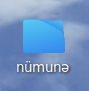
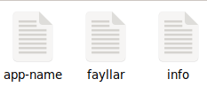
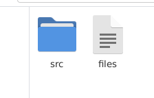
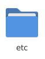
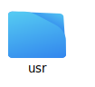
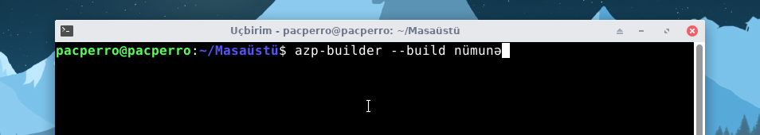
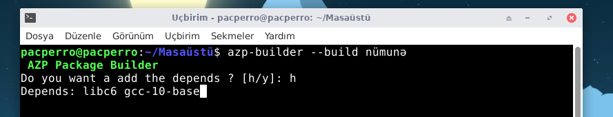
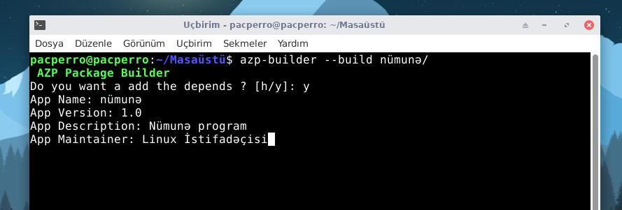
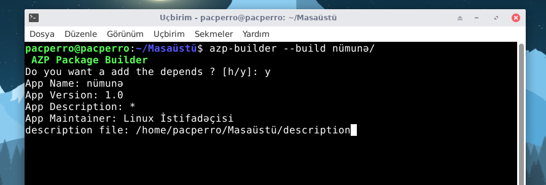
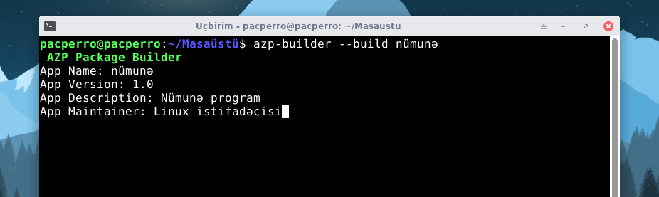

(Bu məqalədəki paket hazırlama yöntəmi AZP 3.0 və sonrakı versiyalarda keçərlidir)
1) İlk öncə bir qovluq yaradın (adı fərq etmir).
3) Layihə qovluğu içinə usr, etc, bin və s. kimi qaynaq qovluqları atmalısınız. Bunlar fayl sisteminə kopyalanacaq əsas qovluqladır.
  4) Bunları tamamladıqdan sonra isə "azp-builder" paketini yükləməlisiniz
Buradan son versiyasını seçib yükləyin: https://azp-paket-sistemi.github.io/azp-depo/a/azp-builder/azp-builder.html
5) Paketi yükləyib quraşdırdıqdan sonra layihənizi paketləmək üçün:
6) Paketlədiyiniz program bağımlılıq tələb edərsə, əlavə edə bilərsiniz:
(Əgər paketlədiyiniz programın bağımlılıqları rəsmi AZP Deposunda yoxdursa, əlaqəyə keçə, xəbər verə bilərsiniz)
7) Layihənizin adını, versiyasını, açıqlama qismini və sahibini yazın
8) Əgər siz programınız haqqında uzun bir açıqlama qeyd etmisinizə, o zaman bunu 2'ci sətrdəki açıqlama qisminə qeyd edə bilmərsiniz. Uzun olan açıqlamanızı paketinizə qeyd etmək üçün azp-builder ilə paketinizi yığan zaman açıqlama qisminə '*' simvolunu daxil edin. Daha sonra açıqlamanızı hərhansı bir fayla qeyd edin (faylın adı fərq etmir). Və daha sonra azp-builder sizdən uzun olan açıqlamanızı qeyd etdiyiniz faylın konumunu, yəni yerini soruşacaq. Faylınızın yerini daxil etdikdən sonra azp-builder özü onu oxuyaraq paketinizə qeyd edəcəkdir
Paketinizi hazırladınız və artıq paketiniz quraşdırılıb istifadə edilməyə hazırdır.
